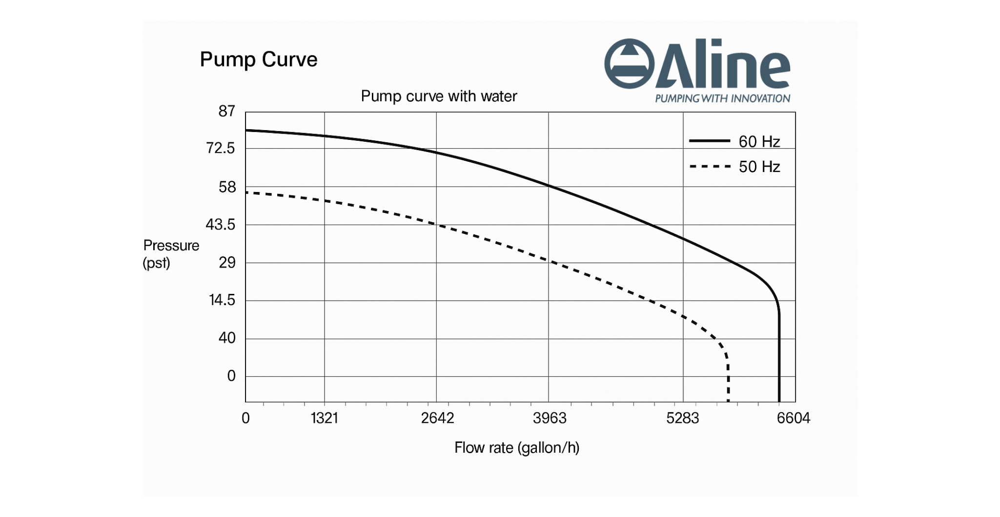
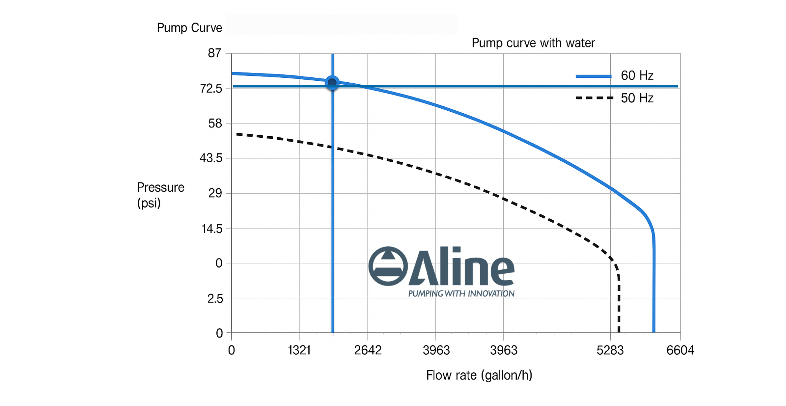
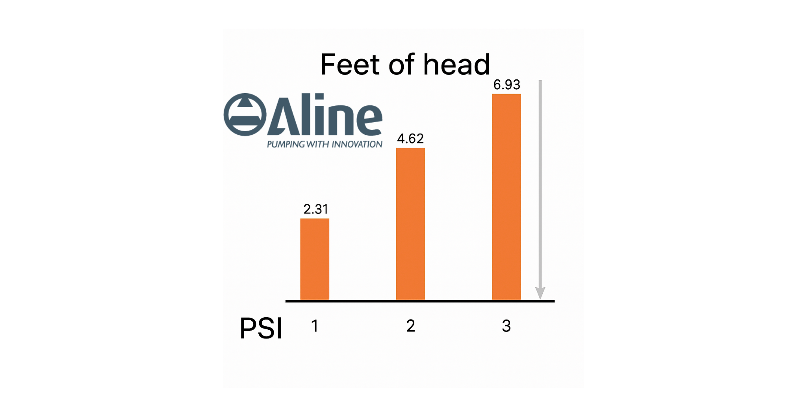

What Is a Pump Performance Curve?
/wp:heading wp:columnswp:column
wp:image {"id":6364,"sizeSlug":"full","linkDestination":"none"}

wp:paragraph
A pump performance curve is a graph that shows how a pump will perform under different flow rates and pressures. It helps you determine the most efficient operating point and ensures the pump you select is right for your system. All pumps have their own performance curve, which varies across different submersible pump designs and brands.
/wp:paragraph /wp:column /wp:columns wp:headingHow to Read a Pump Performance Curve
/wp:heading wp:paragraphFlow and head are the two most vital performance factors displayed on a pump curve. In Australia, flow is measured in litre per minute (lpm) or metre per hour (m3/h). To read a pump curve:
/wp:paragraph wp:columnswp:column {"width":"66.66%"}
wp:image {"id":6363,"sizeSlug":"full","linkDestination":"none"}
 
wp:list {"ordered":true,"start":1}
- wp:list-item
Flow (x-axis): Shows how much fluid the pump can move (measured in L/min or m3/h).
/wp:list-item
wp:list-item
Head (y-axis): Indicates the pressure the pump can generate (converted to metres or PSI). The head measures a fluid’s total mechanical energy at a certain point in the piping system. Sufficient pressure is required to move the fluid despite head loss, which is created by friction in the piping, valves and fittings. 1 PSI drop in system pressure is equivalent to 2.31 head feet.
/wp:list-item
wp:list-item
BEP (Best Efficiency Point): The optimal operating zone. Keep in mind that the best efficiency point is around 85% of the shutoff head. We recommend operating the pump at or close to the BEP, which is typically specified in the pump manual or curve.
/wp:list-item
Viscosity varies with different liquids so you need to know what the flow is. For example, with a home hot water heater, too much flow causes system noise, but too little flow means some areas may not get enough heat. Avoid running the pump beyond its curve range. Doing so reduces efficiency and increases wear. With the pump curve, you can see how the pump will perform throughout its range, and these insights will help to maximise effectiveness and reliability.
/wp:paragraph wp:headingWhat Does a Performance Curve Tell You?
/wp:heading wp:list- wp:list-item
The maximum flow and pressure a pump can achieve
/wp:list-item
wp:list-item
Efficiency across different flow/head combinations
/wp:list-item
wp:list-item
Recommended operational limits
/wp:list-item
wp:list-item
Where cavitation or system imbalance may occur
/wp:list-item
Understanding a pump performance curve is key for correct pump selection and long-term reliability.
/wp:paragraph wp:headingWhat Is a Variable Speed Pressure Pump?
/wp:heading wp:paragraphA variable speed pressure pump automatically adjusts its motor speed to maintain consistent water pressure. This helps reduce energy use, minimise pump cycling, and extend equipment life.
/wp:paragraph wp:paragraphBenefits of variable speed systems:
/wp:paragraph wp:list- wp:list-item
Lower energy bills
/wp:list-item
wp:list-item
Smoother system performance
/wp:list-item
wp:list-item
Reduced system noise
/wp:list-item
wp:list-item
Less wear and tear on components
/wp:list-item
When Should You Use a Variable Speed Pump?
/wp:heading wp:list- wp:list-item
In buildings with fluctuating water demand
/wp:list-item
wp:list-item
For systems requiring pressure consistency
/wp:list-item
wp:list-item
To increase the lifespan of plumbing infrastructure
/wp:list-item
wp:list-item
Where energy efficiency is a priority
/wp:list-item
Aline Pumps: Experts in Pump Performance
/wp:heading wp:paragraphNeed help interpreting a pump curve or choosing a variable speed system? Aline Pumps supplies performance-tested pumps across Australia, complete with expert advice, datasheets, and system support. Contact us today!
/wp:paragraph wp:paragraph /wp:paragraph wp:paragraph /wp:paragraph